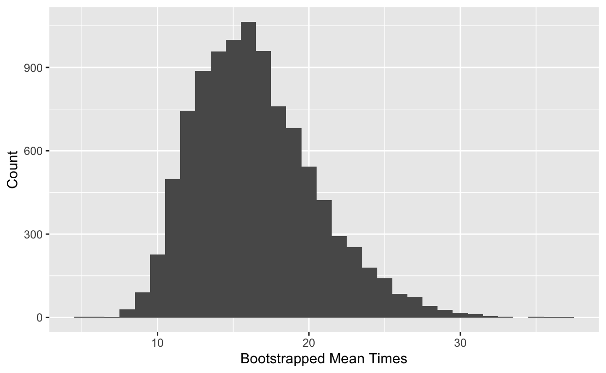

This is still a bit rough! Gaps I plan to fill in are outlined below.
Introduction
This brief tutorial will help you understand the bootstrap and learn how to construct bootstrap confidence intervals using the infer package in R. To start, load the tidyverse and infer packages.
library(tidyverse)
library(infer)Recall first that statistical inference refers to the process of generalizing from a sample to a population. We could use a single number (a point estimate) as our best guess of the population parameter but we often prefer a range of plausible values (an interval estimate).
To construct a confidence interval we need to quantify the variability of our sample statistic. We can do this using the Central Limit Theorem but today we will focus on a simulation-based method called the bootstrap. Invented in 1979 by Brad Efron, the bootstrap allows us to construct confidence intervals based on our sample data using resampling.
In general, bootstrap methods
- have fewer requirements than other (CLT-based) methods
- give more accurate answers
- are more flexible and easily applied to new settings
The basic idea is as follows: our sample is representative of the population we drew from, so if we resample from our original sample many times, this is representative of what we would obtain if we took many samples from the population.
To bootstrap we follow the steps outlined below:
- Take a bootstrap sample: randomly sample with replacement from the original sample using the same sample size as the original sample.
- Calculate the bootstrap statistic: calculate the statistic of interest using the resampled data. This can be the mean, median, proportion, slope, etc.
- Create the bootstrap distribution: Repeat steps (1) and (2) many times using a computer.
- Construct a confidence interval using the bootstrap distribution.
Bootstrapping with Infer
The telecommunications conglomerate Verizon is both a local telephone company that maintains land-line phone services, called an Incument Local Exchance Carrier (ILEC), and a Competitive Local Exchance Carrier (CLEC), which means it sells long-distance services. If there is a service outage and a repair is needed, Verizon is obligated by law to make repairs as quickly for CLEC customers as their own. We will investigate the repair times (in hours) for the two types of customers.
The data is in the Verizon.csv file.
verizon <- read_csv("data/verizon.csv")Examine some summary plots and statistics. What do you notice?
add exercise code chunk with solution
To generate the bootstrap distribution using the infer package we:
specify()the variable of interestgenerate()the bootstrap samplescalculate()the bootstrap statistics
Let’s follow these steps to construct a bootstrap confidence interval for the mean time for CLEC customers. We use the set.seed() function to control the random number generator and make our simulation reproducible.
verizon_ilec <- verizon %>% filter(Group == "ILEC")
verizon_clec <- verizon %>% filter(Group == "CLEC")set.seed(42)
boot_dist <- verizon_clec %>%
specify(response = Time) %>%
generate(reps = 10000, type = "bootstrap") %>%
calculate(stat = "mean")This generates our bootstrap distribution and stores the results in boot_dist.
add question: how many rows are in boot_dist?
add question: what does each row in boot_dist represent?
Let’s visualize the bootstrap distribution.
ggplot(data = boot_dist, aes(x = stat)) +
geom_histogram(binwidth = 1) +
labs(x = "Mean Time")
To construct a 95% bootstrap confidence interval, just find the middle 95% of the bootstrap distribution. We can do the same procedure for any desired level of confidence.
boot_dist %>%
summarize(lower_bound = quantile(stat, 0.025),
upper_bound = quantile(stat, 0.975))Or using the infer package.
get_ci(boot_dist, level = 0.95)Finally, let’s visualize the confidence interval on the bootstrap distribution.

We are 95% confident that the mean mpg of all cars in the population is between 10.1811196 and 25.6817609.
Your turn!
- Fill in the blanks in the code chunk below to generate the bootstrap distribution of the median waiting time for ILEC customers.
set.seed(10)
boot_dist <- _______ %>%
specify(response = _______) %>%
generate(reps = _______, type = "bootstrap") %>%
calculate(stat = _______)- Fill in the blanks in the code chunk below to construct the 80% bootstrap confidence interval. Provide an interpretation of your interval in context.
### question here- Construct a 90% bootstrap confidence interval using the ILEC waiting time data using a statisticof your choosing other than the median or mean and provide a one-sentence interpretation of your interval.
### question here- add question but word better: for each bootstrap sample, how many times did you resample from the original sample?
Resources
- Computer Intensive Methods in Physics by Persi Diaconis and Bradley Efron
- Statistical Inference using Bootstrap Confidence Intervals by Michael Wood
References
- Bootstrap Methods and Permutation Tests by Tim Hesterberg